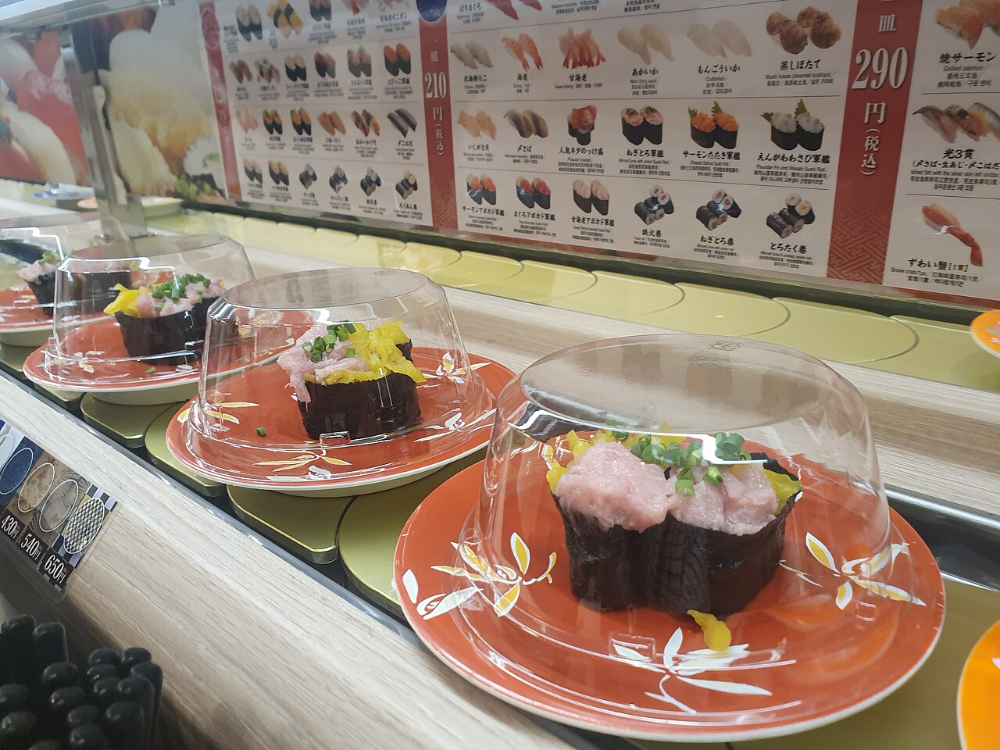
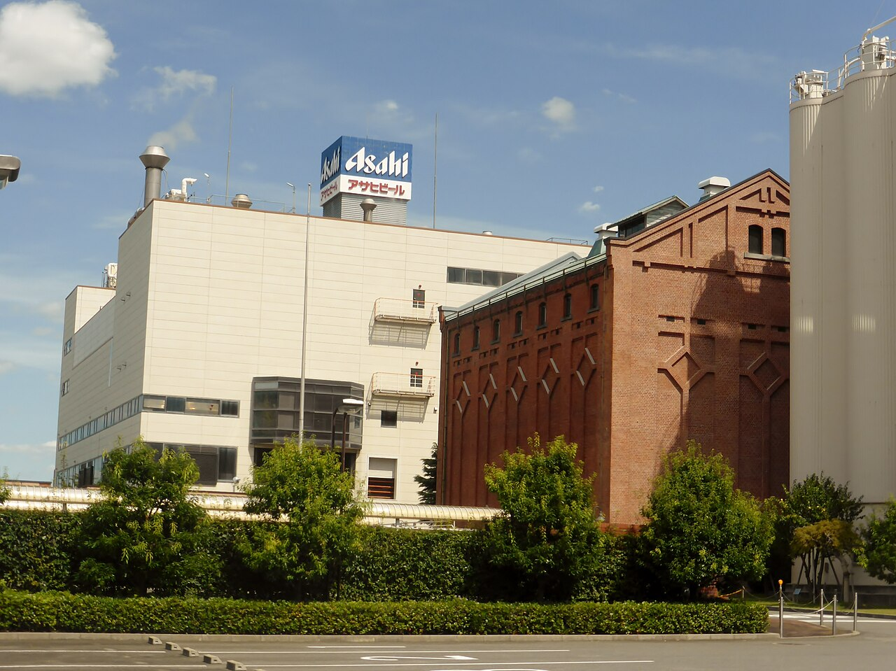
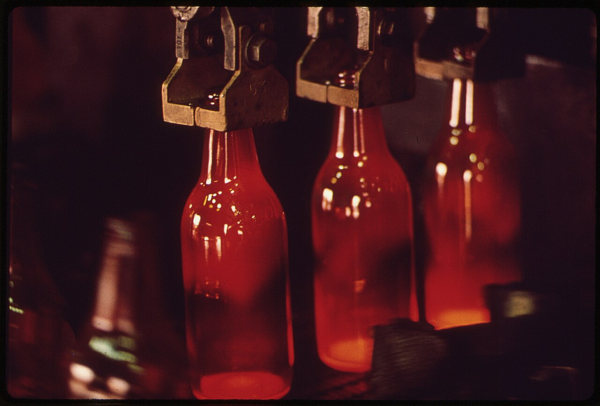
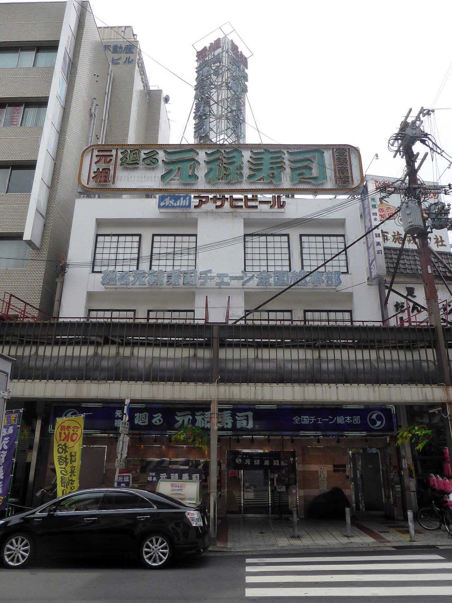
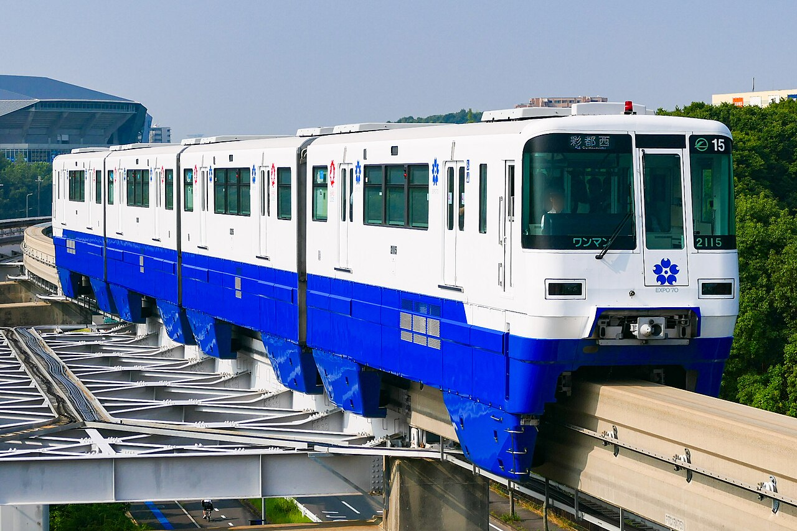
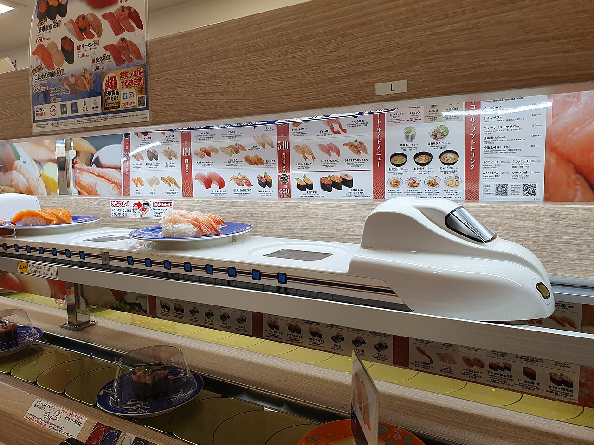
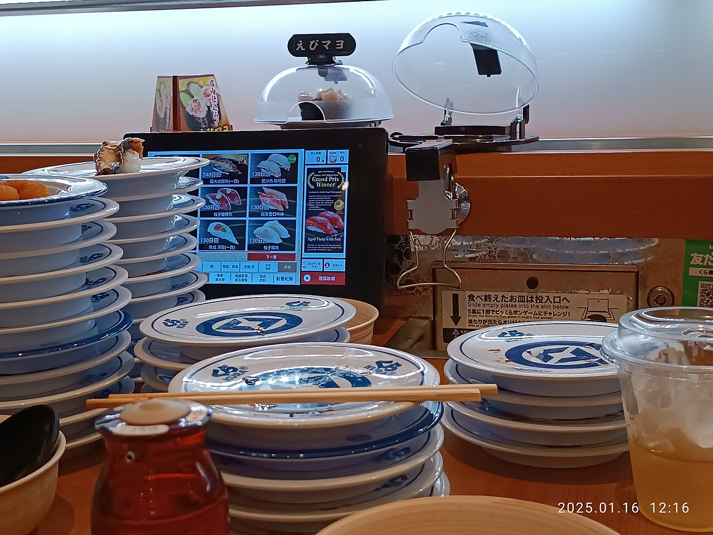
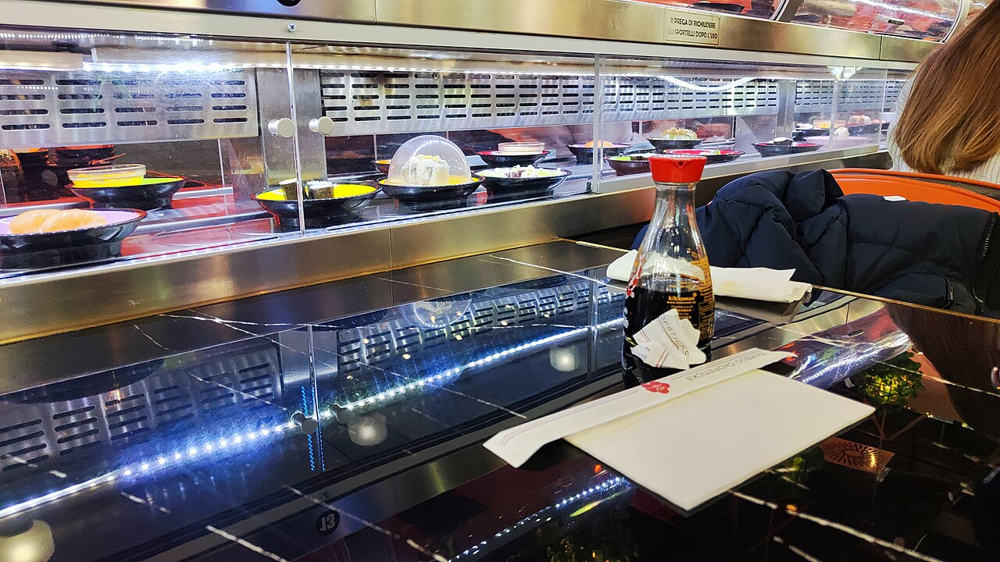

文化・暮らしCulture & Life
回転寿司は、だれが思いついた？
回転寿司を最初に考えたのは、大阪の下町で寿司屋を開いていた一人の主人でした。ビール工場からの発想の流れ、カーブを曲がるしくみの模式図、年表で、皿が回り始めるまでをたどってみませんか。
2026.11.02 UP約5分で読める文：SOMOSOMO編集部
写真：Kaitenzushi plates／Syced（2021年、CC0）
大阪・布施（ふせ）、1958年4月。近鉄の布施駅の近くに、一軒の寿司屋が開きました。カウンターの前を、寿司をのせた皿がゆっくりと動いていきます。お客は、好きな皿を自分で取って食べるのです。
いまでは、どの町にもある回転寿司。家族で出かける外食の定番です。けれど、寿司を「回す」という発想は、いったいだれが、どこから思いついたのでしょう。
In a word
考えたのは、布施で立ち食い寿司の店を開いていた白石義明です。ビール工場で瓶がベルトコンベアで運ばれるのを見て思いつき、カーブでも皿が落ちない台を約10年かけて作り上げました。
01
Bottles on the Belt
ひらめきは、ビール工場を流れる瓶だった
白石義明は1947年、愛媛県から大阪の布施市（いまの東大阪市）に移り、料理店を開きました。やがて寿司も出すようになります。当時の寿司は、お祝いの日に食べる特別なごちそうでした。
白石は、まわりの工場で働く若い人や学生にも気軽に食べてほしいと考えました。そこで店を立ち食いにし、値段を店にはっきり書いて、ほかの店より安く出しました。これが当たり、店は大はやりになります。
困ったのは人手でした。中学を出たばかりの若い職人が、忙しさに耐えられず次々にやめていったのです。少ない人数で、大勢のお客にどうやって寿司を出すか。それが白石の悩みでした。


瓶が流れていく工場左は、大阪府吹田市のアサヒビール吹田工場（2014年）。白石が見学したのは、吹田にあったこの会社の工場だとされます。右は、製造ラインで次々に運ばれる、できたてのビール瓶（1972年、アメリカ。写真はイメージです）。写真：ASAHI BEER Suita Factory／Tokumeigakarinoaoshima（2014年、CC0）、New beer bottles on assembly line／Bill Gillette（1972年、パブリックドメイン）
ヒントは、意外な場所にありました。1948年ごろ、白石は大阪府吹田市のアサヒビールの工場を見学します。そこでは、ビール瓶がベルトコンベア（物をのせて運ぶ、動く帯）にのって次々に流れていきました。
寿司も、こうして流せばいいのではないか。職人は握ることに専念し、お客が流れてくる皿を自分で取れば、注文を聞いて手渡す手間がはぶけます。のちに広く語られる、回転寿司の始まりの場面です。
Fig.01ビール工場から、回る寿司台へ
- 1948年ごろビール工場瓶がベルトコンベアで次々に運ばれるのを見る
- ひらめき寿司を流す職人は握るだけ、お客は流れてくる皿を自分で取る
- 壁カーブで落ちるまっすぐなら運べるが、曲がり角で皿が落ちてしまう
- 1958年回る寿司台扇形の板をつないだ台で、1号店が開く
見どころは、3つめの「壁」。工場の発想をそのまま持ちこむだけでは、寿司は回りませんでした。J-Net21（2023年）などの記事をもとに作った図です。
02
The Problem of the Curve
まっすぐは簡単。難しいのはカーブだった
思いついてから店が開くまで、約10年かかりました。まっすぐ運ぶだけなら、工場と同じベルトで足ります。ところが、カウンターをぐるりと回るには、どこかで曲がらなければなりません。その曲がり角で、皿が落ちてしまったのです。
白石は、近所の町工場の人たちと一緒に試作を重ねました。たどり着いたのは、扇形の板をたくさんつないだ台です。カーブでは、板どうしが扇を開くように向きを変え、すき間を作らずに曲がっていきます。
Fig.02曲がり角の板を、上から見る（模式図）
見どころは、左の赤い三角。まっすぐ用の長方形の板は、カーブの外側で開いてしまいます。右の赤い板1枚の形が、白石たちの答えでした。実際の台の構造を単純にした図です。
1957年、試作機が完成し、「コンベア旋回式食事台」と名づけられました。翌1958年4月、近鉄布施駅の近くに「廻る元禄寿司」の1号店が開きます。冒頭の場面です。白石は1962年、この台を実用新案（ちょっとした工夫の発明を守る権利）として登録しました。

布施の「総本部」東大阪市・布施の元禄寿司の本部店（2013年）。1階の看板には「全国チェーン総本部」とあります。回転寿司は、この布施の町から始まりました。写真：Fuse headquarter of Genroku Zushi／Tokumeigakarinoaoshima（2013年、CC0）
03
Expo '70
万博で知られ、日本中へ広がった
回転寿司の名を全国に広めたのは、1970年の大阪万博（日本万国博覧会）だといわれます。地元の商工会議所から声がかかり、元禄寿司は会場のモノレールの西口駅の前に店を出しました。アメリカ館やソ連館に近く、外国からのお客も多く訪れたそうです。
お客が多すぎて、ネタごとに握っていては追いつきません。そこで、握りのセット（300円）を寿司桶に入れて、レーンに流しました。同じ万博には、日本に初めてやってきたケンタッキーフライドチキンも、実験の店を出していました。

万博の会場のあとを走る万博記念公園の近くを走る大阪モノレール（2025年）。1970年の大阪万博にちなんだ塗装の車両です。回転寿司の店も、万博の会場ではモノレールの駅前にありました。写真：Osaka-Monorail Series2000 EXPO-70／MaedaAkihiko（2025年、CC0）
元禄寿司は、のれんを貸して店を出してもらうフランチャイズ（加盟店の仕組み）を中心に、全国に約250店まで広がりました。まねをする店には、弁護士や弁理士を通じて警告を出していたといいます。
流れが変わったのは1978年です。権利の期限が切れ、だれでも回る寿司台を使えるようになりました。加盟店から独立する店も出て、回転寿司は日本中に一気に増えていきます。
Fig.03回転寿司の歩み
見どころは、1958年から右へ伸びる赤い線。最初の20年は元禄寿司だけの時代で、1978年に権利が切れてから、店も形も一気に増えていきます。横の長さは年数に比例しています。
04
From Circling to Delivering
いまの回転寿司は、「回る」より「届く」
回転寿司の多くの店では、皿の色や柄で値段を分けています。お会計は、食べ終わった皿を数えるだけ。注文を聞く人も、伝票を書く人もほとんどいりません。少ない人手で安く出すという白石の考えは、いまも店の形に残っています。
いまは、スシロー、くら寿司、はま寿司などの大手チェーンが全国に店を出しています。席のタッチパネル（画面にさわって操作する機械）で注文すると、その皿だけが別のレーンで席の前まで届く店も増えました。


注文した皿が「届く」左は、東京・大森の回転寿司店（2021年）。上の段は注文した品を運ぶレーンで、下の段がふつうの回転レーンです。右は、沖縄県豊見城市のくら寿司の席（2025年）。タッチパネルと、積み上がった皿が見えます。写真：Shinkansen-shaped order delivery conveyor／Syced（2021年、CC0）、Muten Kura Sushi, Tomigusuku／Naha Mama Pavilionz（2025年、CC0）
なかには、回すのをやめた店もあります。元気寿司は2012年に1店で回転レーンを止める形を試し、2019年2月の時点で、国内152店のうち122店をこの形にしていました。流しっぱなしで鮮度が落ちたり、捨てる寿司が出たりするのを減らすためです。
回転寿司は、海の外にも広がりました。1997年にはロンドンのソーホーに回転寿司の店ができ、いまではヨーロッパやアジア、アメリカの町でも、寿司を流す店が見られます。

チェコの回転寿司チェコ・オロモウツのショッピングセンターにある回転寿司の店（2025年）。光るレーンの上を、ふたをした皿が流れていきます。布施で生まれた仕組みが、ヨーロッパの町にもあります。写真：Running sushi Olomouc／V0lkanic（2025年、CC0）
20円立ち食いのころの元禄寿司の1皿（4貫）の値段。ほかの店より約3割安かったJ-Net21（2023年）による
1991年国語辞典の『広辞苑』に、「回転寿司」という言葉が初めて載った年（第4版）J-Net21（2023年）による
11月22日「回転寿司記念日」。白石義明の誕生日にちなんで、元禄産業が定めたブルーバックス編集部（2020年）による
Here's the Fun Part
ここが面白い！
カーブの答えは、トランプで遊ぶ子どもの手にあった
曲がり角で皿が落ちる。この壁を越えるヒントをくれたのは、工場でも機械でもありませんでした。
中小企業向けのサイト J-Net21 の記事（2023年）によると、白石は、子どもがトランプを扇のように開いて遊ぶ姿を見て、扇形の板を組み合わせる方式を思いついたといいます。カードは重なったまま、根もとを中心に開いていく。それを板でやれば、カーブでもすき間ができません。
こうして生まれたコンベアの板は「ウロコ」と呼ばれました。2021年には、日本機械学会が回転寿司のコンベア機を「機械遺産」に選んでいます。
ビール工場の瓶と、子どものトランプ。布施の店で回り始めた皿は、2つのまったく違う景色を組み合わせて生まれたのです。
次に回転寿司に行ったら、レーンの曲がり角をのぞいてみてください。板の継ぎ目が、トランプのように開いては閉じていくのが見えるはずです。
出典・参考
- 大阪万博の回転寿司（元禄産業）の記事（J-Net21、中小企業基盤整備機構、2023年11月13日）：1947年に愛媛から布施へ、立ち食いで1皿（4貫）20円・約3割安く値段を明示、若い職人がやめる人手不足、1948年に吹田のビール工場でベルトコンベアを見たこと、約10年の開発とカーブで皿が落ちる問題、トランプを扇状に開く子どもから扇形の部材を思いついたこと、町工場との「ウロコ」の開発、1957年の試作機「コンベア旋回式食事台」、1958年4月の近鉄布施駅近くの1号店、万博の商工会議所からの打診とモノレール西口駅前の出店、寿司桶のセット300円、約250店、警告、1978年の権利の失効、1991年の広辞苑第4版、2021年の機械遺産
- 白石義明（日本語版 Wikipedia）：アサヒビール吹田工場の見学、布施市の近鉄布施駅北口の1号店、1962年の実用新案登録（「コンベヤ附調理食台」、登録第579776号）、1978年まで回転寿司は元禄寿司のチェーンだけだったこと
- Conveyor belt sushi（英語版 Wikipedia）：人手不足、アサヒの醸造所でビール瓶のコンベアを見た着想、1958年に東大阪で開業、1970年の大阪万博をきっかけにしたブーム、皿の色で値段を分ける仕組み、タッチパネルと注文用の高速レーン
- 【今日は回転寿司記念日】「寿司」を大衆食に！板前の思いが生んだ新しい日本の文化（ブルーバックス編集部、現代ビジネス、2020年11月22日）：ビール工場で瓶がベルトコンベアで運ばれる様子からの着想、カーブの走路の工夫、1958年の1号店、万博での評判、白石の誕生日11月22日を元禄産業が「回転寿司記念日」としたこと
- Mechanical Engineering Heritage (Japan)（英語版 Wikipedia）：2021年に回転寿司のコンベア機が日本機械学会の機械遺産に認定されたこと
- 沿革（日本ケンタッキー・フライド・チキン）：1970年3月の大阪万博への実験店の出店
- 「回転しない寿司」路線から6年 元気寿司が思い知った"意外な効果"（ITmedia ビジネスオンライン、2019年3月4日）：2012年7月に1店で試験、2019年2月時点で152店のうち122店、タッチパネルと特急レーン、鮮度と廃棄の問題
- YO! Sushi（英語版 Wikipedia）：1997年1月にロンドンのソーホーで1号店
- 写真：Kaitenzushi plates protected with a plastic cover due to covid-19／Syced（2021年、CC0。東京・大森の回転寿司店）。本文中の写真のクレジットは、それぞれの写真の下に記しています（いずれも CC0 またはパブリックドメイン）